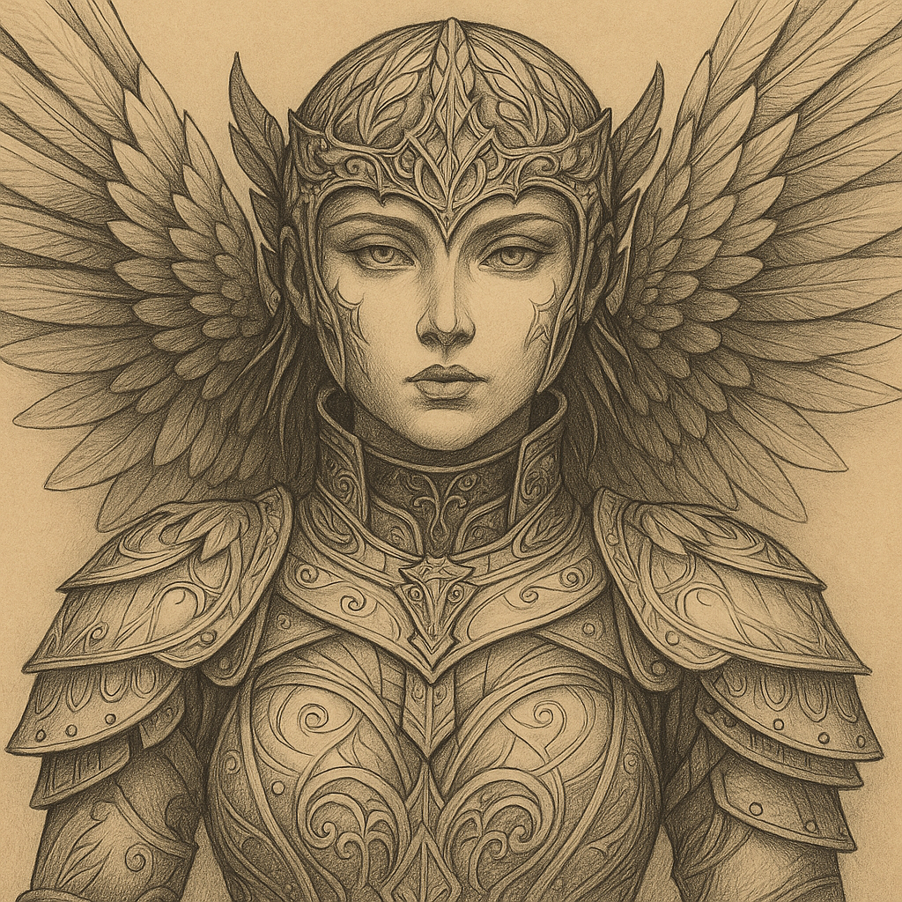
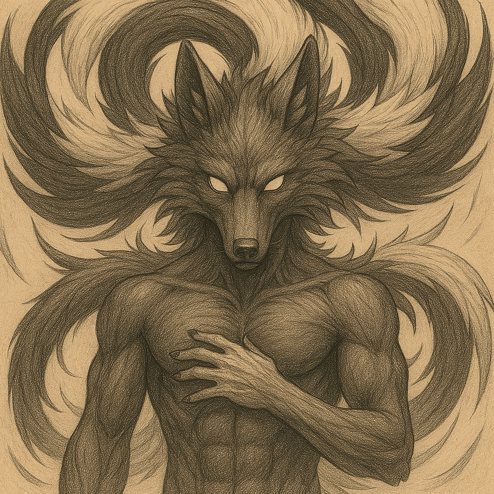
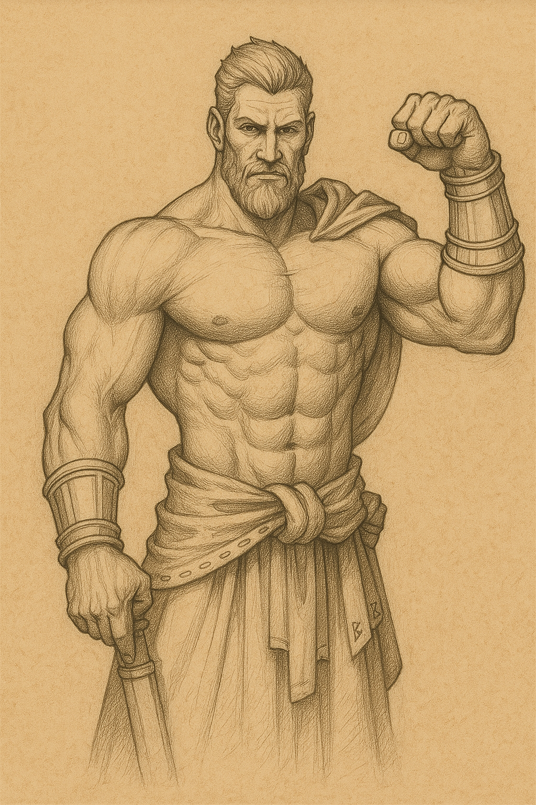
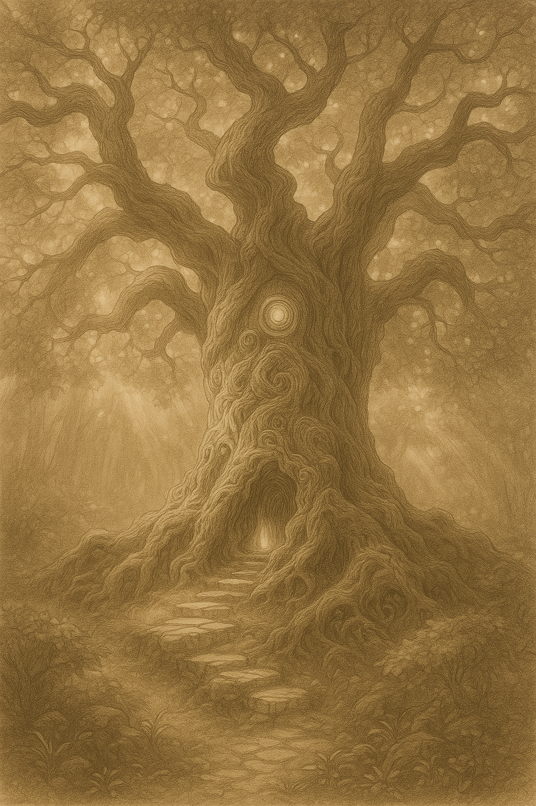
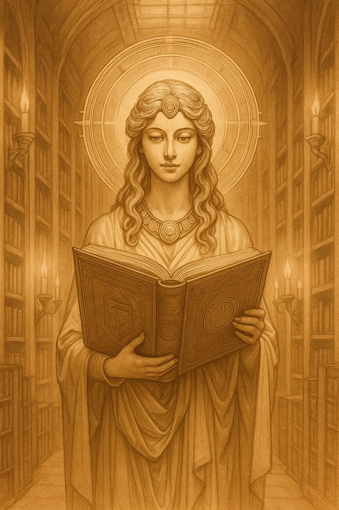
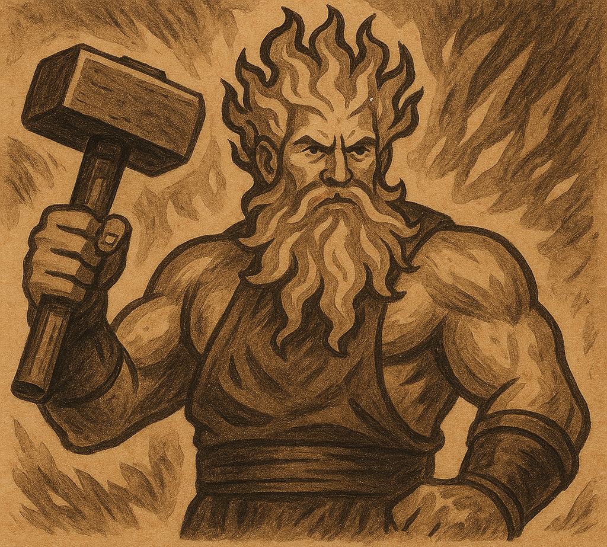
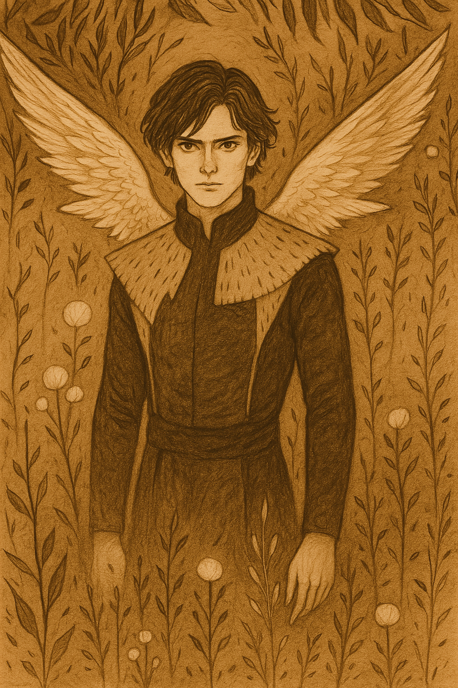
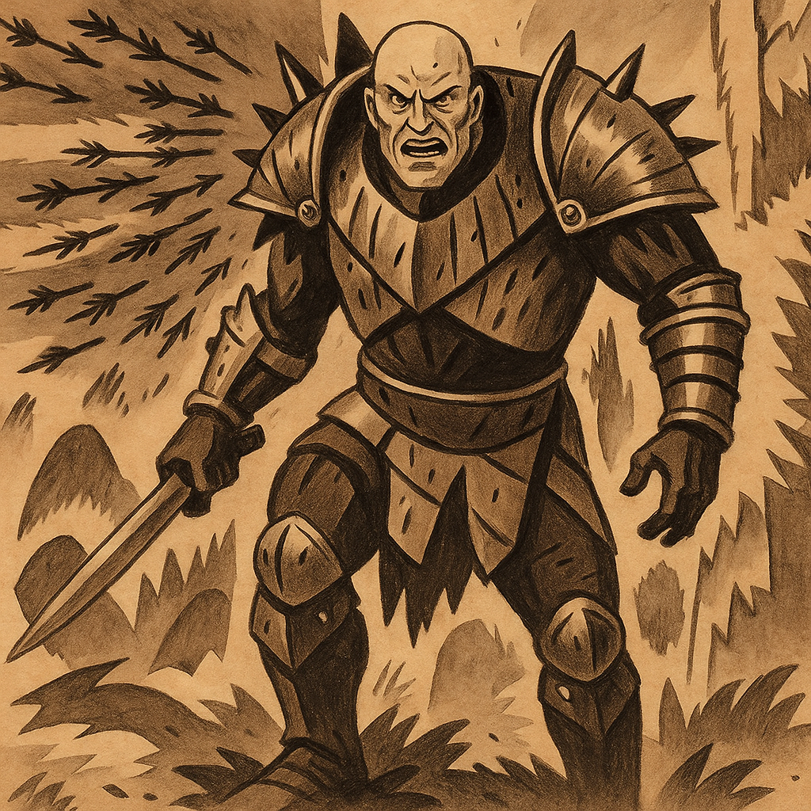

Qu'est-ce qu'une divinité ?
Dans l'univers de Projet Croisade, une divinité n'est pas simplement une figure divine, mais une manifestation vivante de croyances collectives. Grâce à l'engagement et à la foi partagée de nombreux adeptes, l'image de cette divinité se façonne, se solidifie et prend forme en tant qu'entité tangible, née de l'imagination collective de ses croyants. Les prêtres et les paladins doivent prononcer une prière de dix mots en l'honneur de leur divinité pour invoquer ses pouvoirs. Si vous souhaitez créer une nouvelle divinité, il est recommandé d'opter pour un panthéon polythéiste afin de pouvoir accéder à vos pouvoirs en tout temps.
Les divinités de Projet Croisade évoluent en fonction du nombre d'adeptes qui les vénèrent et des dommages qu'elles subissent. Leur état peut influencer l'accès aux pouvoirs des prêtres et des paladins :
- État bon : divinité intacte, fortement vénérée.
- État affaibli : perte d’adeptes ou blessures importantes.
- État mort : invocation impossible, divinité disparue.
Céleste (affaiblie)

Déesse de la lumière, justice et protection des opprimés.
Kitsune (affaiblie)

Dieu renard, illusionniste et créateur de l’Entre-monde.
Basaal (mort)

Divinité de la souffrance, horreur et perversion divine.
L'Arbre Monde (affaibli)

Symbolise vie, nature et équilibre, divinité elfique.
Sirius (mort)

Dieu de la loi et de l’égalité divine absolue.
Rany (mort)

Déesse de la connaissance et gardienne du Codex Universalis.
Mylo (mort)

Dieu de la forge et du feu, artisan des dieux.
Luminus (mort)

Divinité féerique de la lumière et des illusions cosmiques.
Cobalt (mort)

Dieu orc de la domination, meneur brutal des conquêtes tribales.
Les Entités Magiques
Les entités magiques sont des êtres dont l'existence fragile peut être vénérée. Un déséquilibre dans leur culte peut entraîner l'effacement de leur domaine. Certaines peuvent devenir des divinités à part entière.